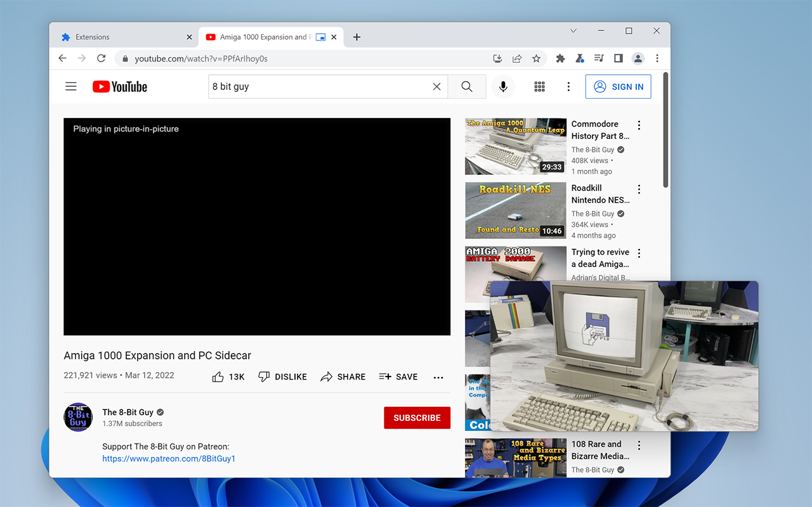
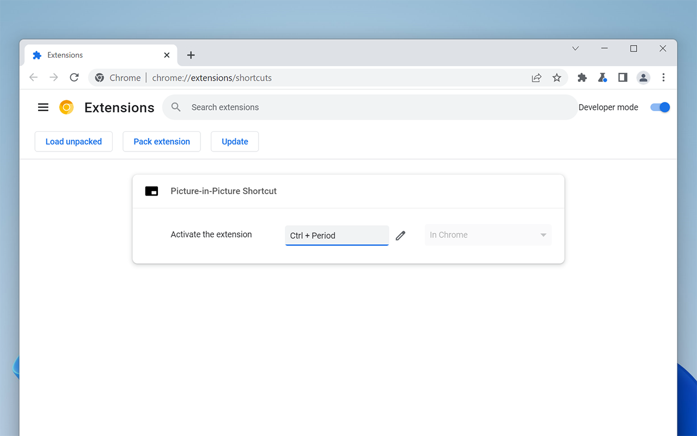

Google Chrome and other modern web browsers have the ability to ‘pop out’ video players in sites into small floating windows, called Picture-in-Picture Mode. This is an incredibly useful feature for videos that don’t need someone’s full attention, or when someone doesn’t want to waste screen space with the browser and page during multi-tasking.
However, Chrome doesn’t have a universal keyboard shortcut for Picture-in-Picture. Most sites don’t have a PiP button, so this useful feature requires two clicks to access (first opening Chrome’s media menu, then clicking the PiP button). I’ve now made an extension to fix this problem: Picture-in-Picture Shortcut.

This extension adds a keyboard shortcut, Ctrl+Period, which toggles Picture-in-Picture Mode for whatever video is currently playing in the tab you have open. You can use the shortcut again to place the video back in its page, or simply click the close button on the popup. Easy!
There are a few other Chrome extensions with similar functionality, but this one leverages existing web and extension APIs to be as lightweight and compatible as possible. The entire JavaScript codebase is less than 100 lines, and it has full interoperability with Chrome’s own PiP button or any buttons a page itself might offer. For example, if you use Chrome’s own PiP button in the media controls popup to move a video to PiP, the keyboard shortcut can still put the video back in its original tab.

Besides the keyboard shortcut, Picture-in-Picture Shortcut also overrides the disablePictureInPicture attribute that pages use to block Chrome from showing its own PiP button. That means when you open PiP with the keyboard shortcut, you can use Picture-in-Picture with sites that normally block it, such as Hulu and Twitter. Firefox and most other browsers do the same thing for their Picture-in-Picture modes.
The extension also attempts to add play/pause controls to the Picture-in-Picture popup even when sites don’t support PiP, which doesn’t always work. For example, I’ve noticed that pausing a show from Hulu in PiP starts again after a few seconds. Sites that already support PiP work just fine.
You can download Picture-in-Picture Shortcut at the link below. I might bring it to Firefox at some point, but Firefox already only requires one click to move a video to PiP (as opposed to Chrome’s two clicks), and also ignores pages that want to block PiP just like this extension does. There’s less of a reason for this to exist on Firefox.